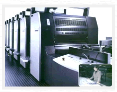

| |
张彩三彩印有限公司是以设计、制作、彩色印刷（纸
制品）为一体的专业化公司。在广大新老客户的支持帮
助下，已成长为一家拥有世界领先印刷设备的知名企
业，并多次受到区政府、市印刷协会表彰。公司硬件设
施完善，组织机构健全。2002年通过ISO9001:2000标准
质量体系认证。2006年3月通过复评。多年来，以“诚
信”为产业之本，以“创新”为发展之源，不断追求卓越品
质和全程服务，购置了对开四色印刷机、102F对开五色
印刷机及全套印前印后设施，致力为广大客户提供高质
量、高效益、快捷方便的全方位印刷解决方案。
|
 |
|